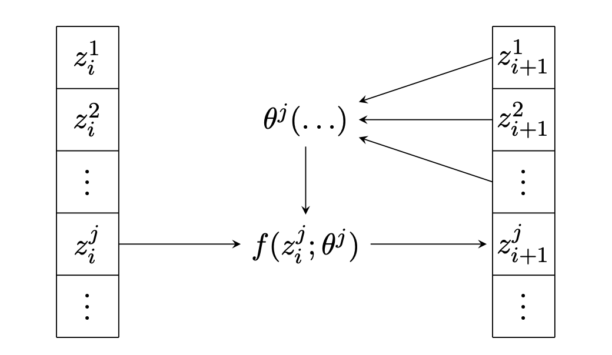

I am a data scientist and theoretical particle physics researcher with an affinity for Monte Carlo simulations and machine learning. I currently work at and am a co-owner of Deconcern, a company that aims to automate legislature concerning the use of hazardous chemical compounds. To do so, I develop and deploy multimodal document understanding models to automatically extract relevant information from product documentation. I previously completed my master and PhD at Radboud University Nijmegen, and was a postdoctoral researcher at University College London / Oxford University (visitor), where I worked on Monte Carlo simulations and generative models for collision processes at the LHC.
Research Interest
Generative Modelling
 Even with the vast computational power of the CERN worldwide computing grid, the computational cost of Monte Carlo simulations for collisions at the LHC form a major bottleneck. It is already the leading source of uncertainty in many cases, and this situation will only deteriorate as more data is collected. At the same time, the deep learning revolution has led to the development of extremely powerful generative modelling techniques, which have the potential to speed up simulations by many orders of magnitude. My research concerns the development of generative models that are applicable to the simulations of particle physics events, which have a variety of unique properties.
Monte Carlo Generator Development
Before one can turn to generative models for speed, precise control over the theoretical accuracy of the simulations is first required. These simulations are produced by Monte Carlo event generators, complex pieces of software that encode an enormous amounts of theoretical knowledge to produce realistic collision events with extremely high fidelity. I am an author and developer of the PYTHIA event generator, the most widely-used software in all of particle physics. I am also a member of the PanScales collaboration, an effort of a group leading theoretical physicists to improve the theoretical accuracy of Monte Carlo event generators.
Anomaly Detection and Event Classification
The ultimate goal of the LHC physics program is to verify the Standard Model of particle physics, and to determine what lies beyond it. The Standard Model has a number of well-understood shortcomings, and the key to solving them may well lie in the vast amounts of data collected at the LHC. Sifting through this data and inferring useful information from it is however a major challenge, but one that deep learning techniques have proven to be extremely useful in. The field of anomaly detection, a type of unsupervised learning, allows us to identify collision events that could potentially point to physics beyond the Standard Model, without assuming knowledge of what shape it would take. For more focussed searches, event classification with models such as Graph Neural Networks and Transformers lead to much better performance than classical approaches.
Selected publications
A full list of my publications is available on Inspire or Google Scholar. Below are a few highlights.
Generative Modelling
Event Generation and Statistical Sampling for Physics with Deep Generative Models and a Density Information Buffer S. Otten, S. Caron, W. de Swart, M. van Beekveld, L. Hendriks, C. van Leeuwen, D. Podareanu, R. Ruiz de Austri, R. Verheyen Nature Communications 2021 [journal] [arXiv]
Phase Space Sampling and Inference from Weighted Events with Autoregressive Flows B. Stienen, R. Verheyen SciPost Physics 2021 [journal] [arXiv] [code]
Event Generation and Density Estimation with Surjective Normalizing Flows R. Verheyen SciPost Physics 2022 [journal] [arXiv] [code]
Monte Carlo Generator Development
A Comprehensive Guide to the Physics and Usage of PYTHIA 8.3
C. Bierlich, S. Chakraborty, N. Desai, L. Gellersen, I. Helenius, P. Ilten, L. Lönnblad, S. Mrenna, S. Prestel, C. Preuss, T. Sjöstrand, P. Skands, M. Utheim, R. Verheyen
Scipost Physics Codebases 2022 [journal] [arXiv] [code]
PanScales Parton Showers for Hadron Collisions: Formulation and Fixed-order studies M. van Beekveld, S. Ferrario Ravasio, G. Salam, A. Soto-Ontoso, G. Soyez, R. Verheyen Journal of High Energy Physics 2022 [journal] [arXiv]
Spin correlations in final-state parton showers and jet observables A. Karlberg, G. Salam, L. Scyboz, R. Verheyen The European Physical Journal 2021 [journal] [arXiv]
Collinear Electroweak Radiation in Antenna Parton Showers R. Kleiss, R. Verheyen The European Physical Journal 2020 [journal] [arXiv] [code]
Competing Sudakov Veto Algorithms R. Kleiss, R. Verheyen The European Physical Journal 2016 [journal] [arXiv] [code]
Anomaly Detection and Event Classification
Climbing four tops with graph networks, transformers and pairwise features L. Builtjes, S. Caron, P. Moskvitina, C. Nellist, R. Ruiz de Austri, R. Verheyen, Z. Zhang [arXiv] [code]
Rare and Different: Anomaly Scores from a combination of Likelihood and Out-of-distribution Models to Detect New Physics at the LHC S. Caron, L. Hendriks, R. Verheyen SciPost Physics 2022 [journal] [arXiv] [code]
The Dark Machines Anomaly Score Challenge: Benchmark Data and Model Independent Event Classification for the Large Hadron Collider T. Aarrestad, M. van Beekveld, M. Bona, A. Boveia, S. Caron, J.Davies, A. De Simone, C. Doglioni, J. M. Duarte, A. Farbin, H. Gupta, L. Hendriks, L. Heinrich, J. Howarth, P. Jawahar, A. Jueid, J. Lastow, A. Leinweber, J. Mamuzic, E. Merényi, A. Morandini, P. Moskvitina, C. Nellist, J.Ngadiuba, B. Ostdiek, M. Pierini, B. Ravina, R. Ruiz de Austri, S. Sekmen, M. Touranakou, M. Vaškevičiūte, R. Vilalta, J. R. Vlimant, R. Verheyen, M. White, E. Wulff, E. Wallin, K. A. Wozniak, Z. Zhang SciPost Physics 2022 [journal] [arXiv] [code]
Selected talks
Below is a selected list of a few talks I have given in the past.
| Date | Place | Occasion | Title | Link |
|---|---|---|---|---|
| Newcastle, UK | HP2 conference | An overview of the PanScales parton showers | [slides] | |
| 2022-06 | Heidelberg University, Germany | Invited seminar | Event Generation and Density Estimation with Surjective Normalizing Flows | [slides] |
| 2022-05 | Pittsburgh, US | Loopfest conference | The PanScales parton showers for hadron collisions | [slides] |
| 2021-09 | Online | Snowmass EF05 meeting | Spin correlations in parton showers and jet observables | [slides] |
| 2021-08 | Online | Taming the accuracy of event generators workshop | QED and EW showers in Vincia | [slides] |
| 2021-05 | Durham, UK | Parton showers and resummation conference | Spin Correlations in the PanScales parton showers and jet observables | [slides] |
| 2021-01 | Online | Snowmass VBS meeting | Electroweak Radiation in the Vincia Parton Shower | [slides] |
| 2020-07 | Online | Taming the accuracy of event generators workshop | Competing Sudakov Veto Algorithms | [slides] |
| 2020-05 | University of Jyväskylä, Finland | Pythia public seminar | Electroweak Corrections in the Vincia Parton Shower | [slides] |
| 2020-05 | Oxford, UK | Dalitz seminar | Electroweak Radiation in the Vincia Parton Shower | [slides] |
| 2019-03 | Monash University, Melbourne | Invited seminar | Event Generation and Statistical Sampling with Deep Generative Models | [slides] |
| 2018-06 | Lund, Sweden | Parton showers and resummation conference | Global Recoil in Initial-Final Antennae | [slides] |
| 2018-04 | CERN, Switserland | MCnet meeting | QED Radiation in Vincia | [slides] |
| 2017-03 | Cambridge, UK | Parton showers and resummation conference | Electroweak Radiation in Antenna Showers | [slides] |